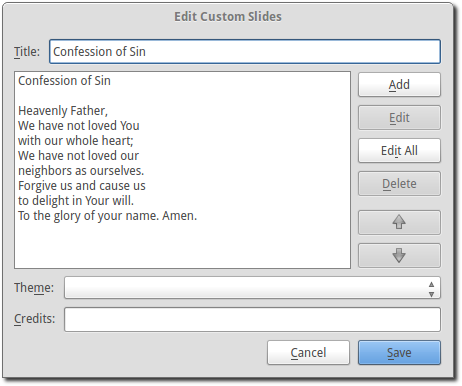

Custom Slides
Adding a new custom slide displays the following dialog:
- Title:
- Name of your custom slide.
Note: Anything typed in the title name between these brackets <> will not be displayed in the screen title. The option to show titles can be configured using Custom Display.
- Add:
- After clicking on Add you will enter your text you want to display in this box. To create multiple slides, click the Split Slide button. When you have finished adding your text, click on the Save button.
- Theme:
- Select the theme you want to use for your Custom slide from this drop down box.
- Credits:
- Anything typed in this box will be displayed in the footer information on the display. When you are finished, click the Save button.
To Edit your slide, click on Edit to edit part of it or Edit All if you need to make multiple changes. Use the Up and Down arrows to change the arrangement of your custom slide.